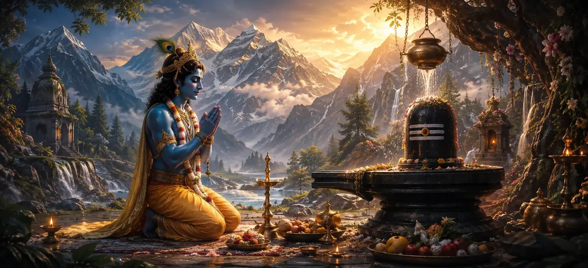

Shri Krishna's Quest for Sons
The thirty-sixth chapter of the Vayaviya Samhita chronicles Lord Krishna's supreme devotion and worship of Lord Shiva to attain worthy progeny.
Sage Vayu narrates how the Supreme Lord incarnate, Krishna, performed rigorous penance and rituals to invoke Mahadeva's blessings.
This chapter demonstrates the highest example of devotion, showing that even avatars worship Lord Shiva to set a precedent for mankind.
Chapter 36 Highlights
Supreme Devotee
Depicts Lord Krishna embodying the ideal attitude of a devoted seeker.
Intentional Worship
Highlights Krishna's dedicated rituals to fulfill his divine quest for sons.
Rigorous Penance
Showcases the deep meditation and austerities undertaken by Krishna.
Setting Example
Teaches humanity the paramount importance of worshiping Mahadeva.
Divine Grace
Prepares the path for Shiva's benevolent response and benediction.
Narrative Flow
Leads smoothly into Chapter 37 covering The Glory of Lord Shiva.
Core Topics in This Chapter
The Commencement of Krishna's Quest
Sage Vayu explains how Lord Krishna, desiring illustrious and noble sons to continue his lineage, resolved to worship Lord Shiva.
Although Lord Krishna is the supreme maintainer of the universe, He enacted this pastime to honor the supreme status of Mahadeva.
Desire for Worthy Progeny through Shiva
Recognizing that all boons and auspicious fortunes originate from Shiva, Krishna directed His absolute focus toward the lord of Kailash.
His objective was clear: to perform such intense worship that Shiva would personally grant him the blessing of noble sons.
Rigorous Penance and Vows of Krishna
Lord Krishna subjected Himself to severe spiritual disciplines, observing strict fasts and engaging in uninterrupted concentration.
His exemplary conduct demonstrated how a true devotee approaches the divine with utmost sincerity and humility.
Deep Meditation and Hymns to Mahadeva
Immersed in deep meditation, Krishna chanted sacred hymns and mantras glorifying the infinite attributes of Lord Shiva.
The atmosphere around Him resonated with spiritual energy as His devotion reached sublime heights.
Establishing the Precedent of Devotion
Sage Vayu emphasizes to the sages that Krishna's worship of Shiva serves as a supreme lesson for all spiritual aspirants.
It proves that devotion to Mahadeva is the ultimate means to fulfill all righteous desires and attain spiritual liberation.
Conclusion of the Quest Narrative
Chapter 36 concludes by setting the stage for Lord Shiva's divine manifestation and the fulfillment of Krishna's sacred desire.
The assembled listeners await with eager anticipation to hear how Mahadeva responds to Krishna's profound austerity.
Transition to Chapter 37
Following Krishna's quest described in Chapter 36, Rishi Vayu prepares to narrate Chapter 37, 'The Glory of Lord Shiva'.
The next chapter expands upon the majestic attributes, supreme supremacy, and boundless glory of Lord Mahadeva.
Key Teachings of Chapter 36
Exemplary Devotion
Even avatars demonstrate perfect surrender to Mahadeva.
Righteous Desires
Seeking noble progeny through divine worship is fully sanctified.
Rigorous Sadhana
Spiritual success requires steadfast vows and deep meditation.
Universal Precedent
Krishna's actions set the highest standard for spiritual seekers.
Shiva's Supremacy
Reaffirms that all divine blessings flow from Lord Shiva.
Next Narrative
Flows into the grand exposition of Shiva's glory in Chapter 37.
Spiritual Reflection
Lord Krishna's worship of Shiva teaches us that true greatness lies in humility and devotion, and that seeking divine grace is the foundation of all righteous accomplishments.
Living the Message of Chapter 36
Approach God with utmost humility, dedication, and sincerity in all your endeavors.
Align your personal desires with righteousness and divine blessings.
Maintain steady spiritual discipline and regular meditation on Lord Shiva.
Key Spiritual Concepts
Lord Krishna's aspiration for worthy sons.
The supreme yoga of devotion practiced by avatars.
The sacred methodology of worshiping Lord Shiva.
Spiritual practice driven by noble and righteous intent.
Devotion enacted to set an example for the world.
The prelude to the glory of Lord Shiva in Chapter 37.
Chapter Summary
Vayaviya Samhita Chapter 36 presents Shri Krishna's Quest for Sons. Detailing Lord Krishna's deliberate worship, rigorous penance, deep meditation, and setting of the supreme devotional precedent, this chapter illuminates the path of divine surrender. It prepares the reader for Chapter 37, 'The Glory of Lord Shiva'.
Frequently Asked Questions
1. What is the primary subject of Vayaviya Samhita Chapter 36?
Chapter 36 details Lord Krishna's quest for worthy sons, his intense penance, and his dedicated worship of Lord Shiva.
2. Why does Lord Krishna worship Lord Shiva in this chapter?
Lord Krishna worships Lord Shiva to seek His divine blessings and attain illustrious and worthy progeny.
3. How does Lord Krishna perform his worship and penance?
Lord Krishna engages in deep meditation, rigorous vows, and sincere rituals directed toward pleasing Mahadeva.
4. Who narrates this sacred episode in the Vayaviya Samhita?
Sage Vayu narrates the account of Lord Krishna's worship to the assembled sages.
5. What is the next chapter for navigation after Chapter 36?
The next chapter for navigation is titled 'The Glory of Lord Shiva'.
“Even the supreme Lord Krishna worshiped Mahadeva to set an example, proving that devotion to Shiva is the supreme cornerstone of all spiritual attainment.”
Continue Through Vayaviya Samhita
Chapter 36 concludes Shri Krishna's Quest for Sons. Continue to The Glory of Lord Shiva.